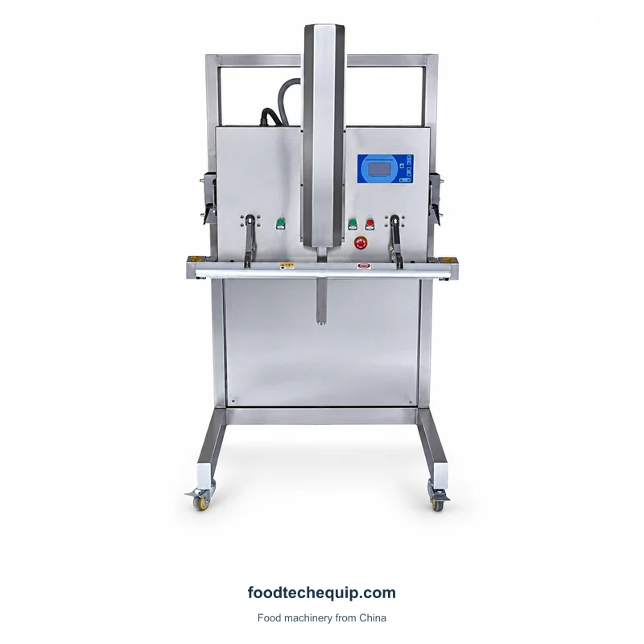
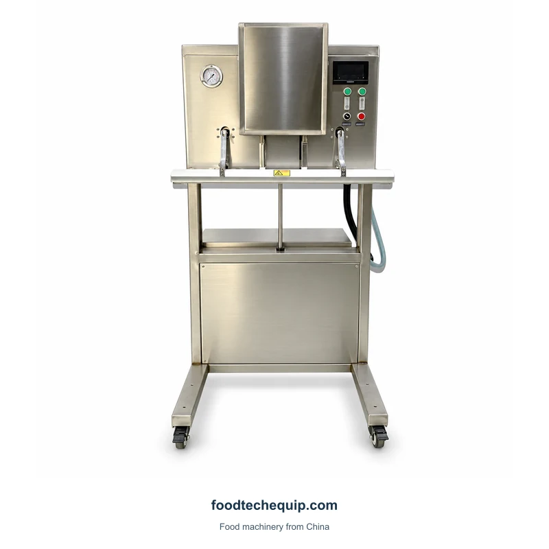
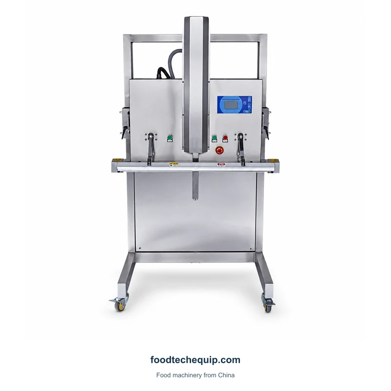
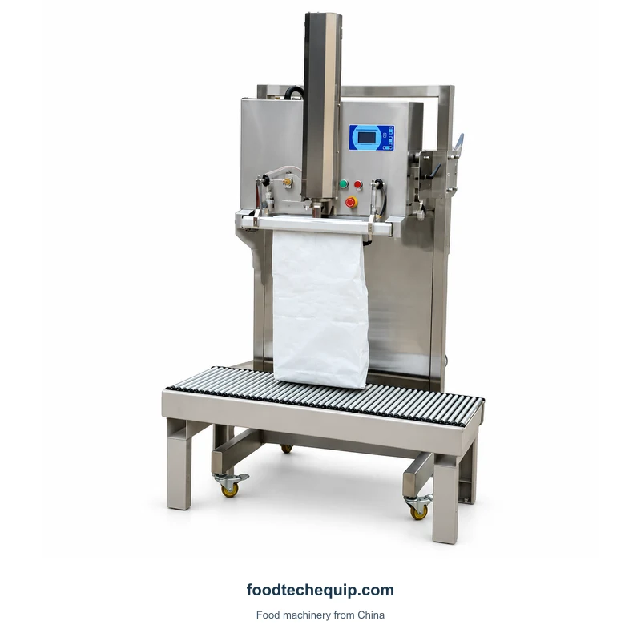

Envasado al vacío
Máquina de envasado al vacío exterior regulable en altura
Máquina envasadora al vacío exterior con elevador vertical y barra selladora frontal.
Ver equipo
Selecciona la imagen para verla más grande.
Máquina de envasado al vacío exterior regulable en altura y con sección de trabajo frontal.
Selección de equipos · Guía de instalación · Soporte remoto
Explorar información del producto ↓Para la configuración 600, proporcione la altura del paquete lleno, la posición de trabajo requerida y el suministro eléctrico disponible. Incluir soporte y acceso de carga en el plano de instalación.
Elección de un diseño de envasado al vacío ↗| Parámetro | Valor | Unidad | Configuración |
|---|---|---|---|
| Potencia nominal | 1.5 | kW | 600 |
| Tensión nominal | 220 | V | 600 |
| Material de la carcasa | Acero inoxidable | — | — |
El paquete lleno debe adaptarse a la disposición de trabajo y permanecer apoyado durante la carga. Analice los requisitos de cierre y boca de la bolsa junto con el sobre del paquete completo. Trate cualquier tarea separada de cierre de bolsas como su propio paso del proceso.

Máquina envasadora al vacío exterior con elevador vertical y barra selladora frontal.
Ver equipo
Máquina de envasado al vacío exterior de suelo con conjunto de elevación y sección de sellado frontal.
Ver equipo
Equipos de envasado al vacío externo que se ofrecen en diseños verticales y de sección elevadora.
Ver equipo